O html, támbem conhecido como linguagem de hype texto é a estrutura principal de uma página web, pois atráves dela esboçamos a estrutrura de nosso site.
HTML a primeira versão foi publicada em 1992, baseando-se em propostas feita pelo seu criado Tim Berners-lee seu.
HTML 4.0 Nessa versão o css foi integrado contribuindo na criação de layoud e design mais sofisticados.
XHTML Uma versão do html reformulada de acordo com as regras Xml, mas devido a suas regras estritas foi descontinuada.
HTML5 A versão predominante desde de 2014, substituindo as versões anteriores, por uma versão apefeicoada da linguagem.
!DOCTYPE html: Usamos essa Tag para Definimos o documento HTML
html: Tudo que estive dentro desta Tag será intepretado como o documento!
head Essa tag reserva infromações destinadas ao navegador., como é o caso do "Title" o título presente na página.
body:O conteúdo dentro desta tag, será o que vai ser exibido no navegador.
h1,h2,h3,h4,h5,h6: todas as Tags listadas representam o titulo principal e seus sub-titulos
p: Nesta Tag, colocaremos os paragrafos destinados ao nosso arquivo, as tags que o acompanham, como i, br, sub, etc, rrepresentam a manipulação textual que podemos faze no documento.
Para passamos uma informação adicional a um elemento, usamos a Tag "a", acompanhada pelo atributo "href="" " passando o link entre aspas.atenção o href, deve fica dentro da tag de abertura "a", equanto o elemento exibido,deve fica no meio entre a tag de abertura e a tag de fechamento(/)
click no link acima, ele será direcionado há um site.
Com o código pronto chegou a hora de executa-lo, mas como devo fazer isso?
caso você, esteja usando um editor de texto padrão de seu navegador, localize ele em seu dispósitivo e troque o nome logo após a virgúla pela extensão "html", após isso dê dos cliques e ele abrirá np navergador.
Usar HTML é fácil, o que precisamos nada mais é do que saber quais elemntos usar e como ultilizar seus atributos caso tenha.
Quando usamos elementos do tipo texto, termos uma finitas formas de manipulalos, entre as tags principais, estão:
Em html, rxistem três formas de criar uma listas, cada uma com sua devida perculariedade.
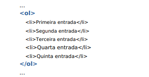
Em listas ordenas, Nesta tag, usamos o elemento "OL" para listamos os intens(li) da lista em ordem númerica.
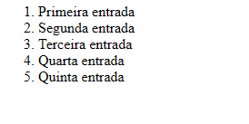
Similares as listas ordenas, com o diferencial de não apresenta uma numeração, no lugar, existe um ponto antercendendo o intem da lista (li)
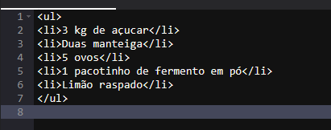
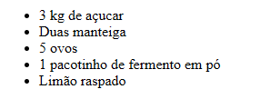
Ao contrário das demais listas, que usam o elemento li, a estrutura de uma lista de descrição, usar 3 elementos cruciais, entre eles, estão:
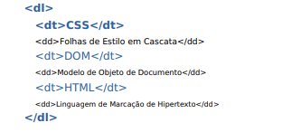
Seguindo a estrutura presente nas listas ordenadas e não ordenadas, as listas animhadas tem como diererncial a criação de duas lisats interligadas dentro do container.
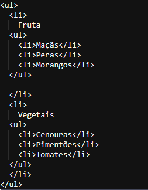

Em um site existe várias web páginas dentro ou fora do site, basicamente você pode destiguir em vários links, entre eles, termos:
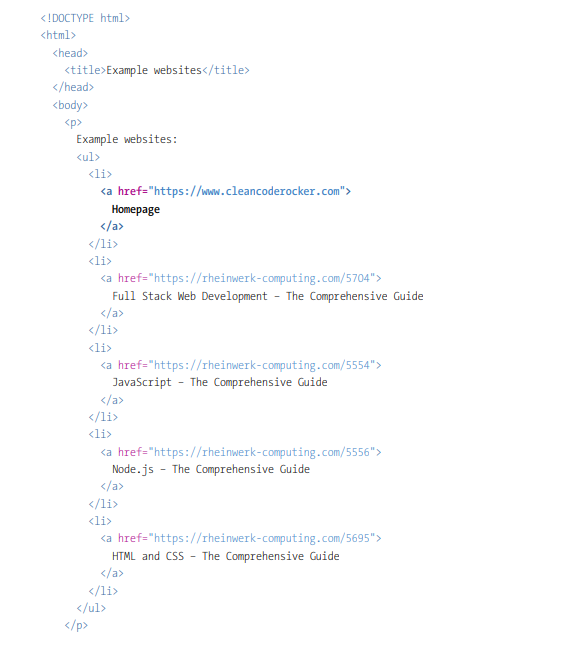
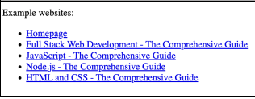
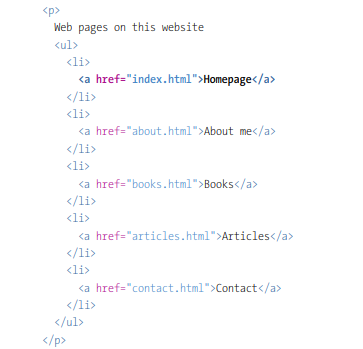
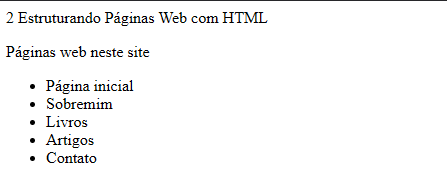
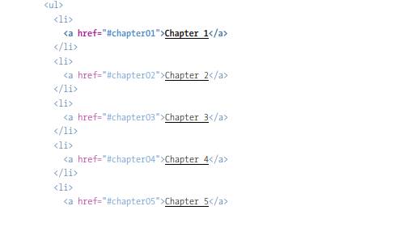
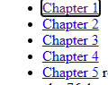
Em html, você pode adicionar uma imagem atráves da Tag "img", "img" é similar ao elemento "br" em sua natureza, pois ambos são elementos vazios, já que não contém texto ou outros dados em sí, para isso o "img" necessita de um atributo conhecido como src, onde você especificar a URL onde a imagem está ou o caminho dentro de seu disposítivo.
Na tag "img" você ainda têm o atributo "alt" elemento reponsável pela adicição de texto as imagem, servindo em primeiro momento como uma descrição, mas podendo abrangir mais do que seu uso inicial. Cabe destacar que essa tag fica invisível na tela caso a imagem seja carreda com sucesso, caso contário, alt será exibida.
Title, na tag "img", você têm a opção de adicionar um titúlo a sua imagem, entretanto, esse titúlo só ficará visivel caso o usuário passe o curso do mouse encima da imagem.
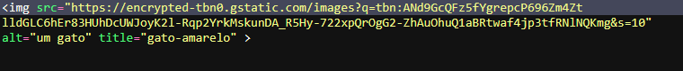
a imagem acima mostra como ficou a imagem inserida na tag imagem.
Caso retirasimos a imagem, alt, ficaria visível no navegado.
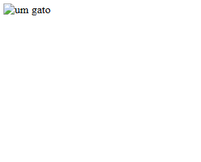
Por fim, para termos a vizualização do atributo "title" precisaremos posiciona o curso do mouse encima da imagem correspodente
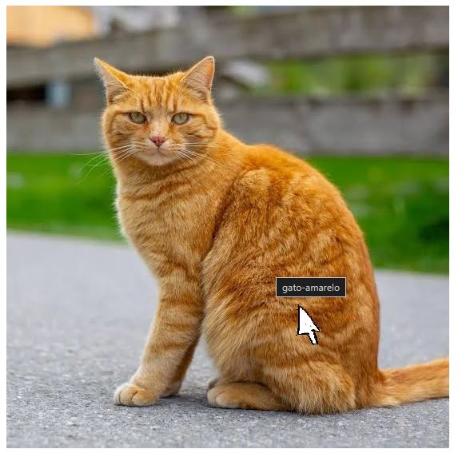
Como já virmos anteriomente a tag imagem, apresenta alguns atributos ocultos que ajudam a compôr a imagem, porém, a duas tag especificas que auxiliam em um novo comportamento a tag e são elas:
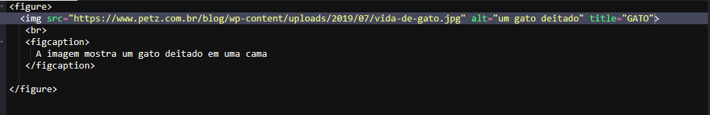
Tabelas são elementos ideais para estrutura dados correntes, sejam eles produtos de uma loja ou resultados de uma partida de futebol, os dados organizados em grandes colunas e lihas, um pequeno elemnto desse conjunto de fatores e chamado de célula.
Em html uma tabela é construida pelo elemento "table", seguido termos o cabeçalho que é criado pelo elemento "th",para novas linhas você adiciona a tag "tr", células são enviadas via "td" (os dados)
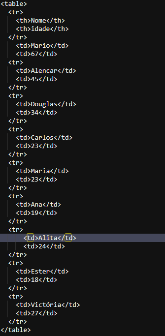
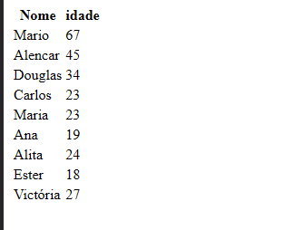
Em tabelas longas para ter uma precisão maior sobre os elementos que estão sobre o dóminio da tabela, o ideal seria usar elementos que marquem as estruturas que serão estilizadas futuramente, entre eles podermos citar:
Com a adição destes elementos se torna fácil a manipulação posteriomente em css de cada linha da tabela
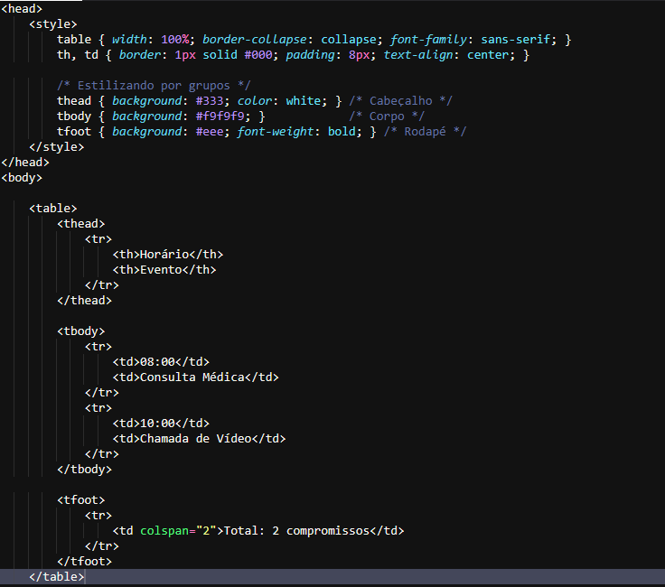
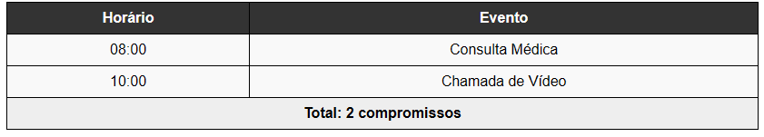
Formulários são intens comuns na internet e as pessoas os usam recorrentemente, por exemplo toda vez que você preenche a barra de pesquisa de seu navegado você está enviando uma mensagem ao servidor correspodente a aquele mecanismo, com base nisso o servidor gera uma resposta a você posteriomente.
Em html existem vários meio de se criar um campo de formulário abragindo desde um simples sistema de login a um sitema de maior complexidade.
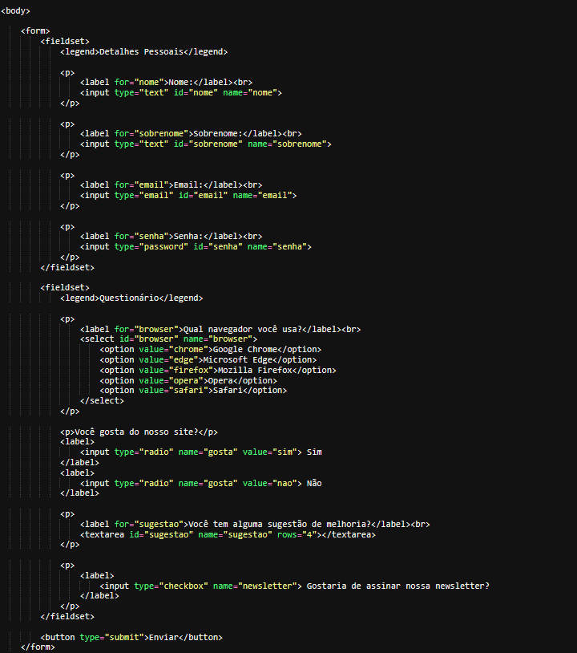
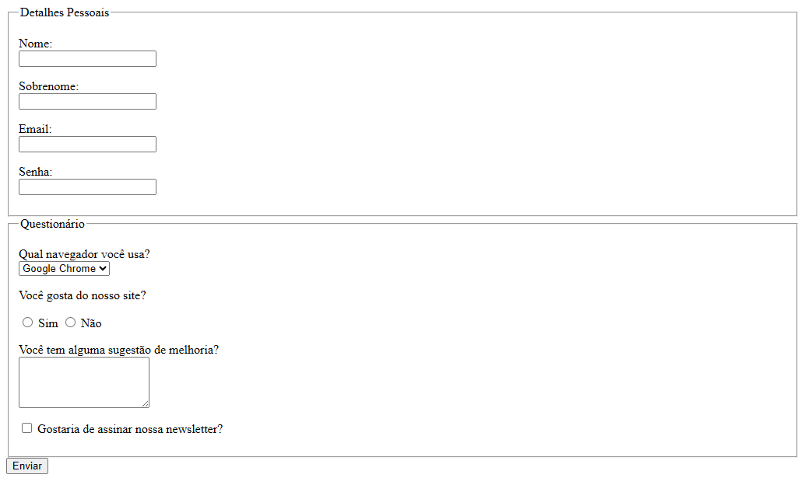
Em "form" ainda é possivel usar o atributo "method" para especificar ao navergador qual método htpp deseja realiza neste formulário.
Como vistos anteriomente, existem elementos "pais" que agrupam elementos filhos em seu interior, essas tag muitas vezes possui apenas a função de agrupa elementos, mas no cápitulo, foram citadas apenas algumas, porém existem outras, uma em especifica acabou sendo deixado de fora a tag "div" geralmente é usada para dividir elementos na tela.
Já parte de linhas, virmos támbem algumas como é o caso da tag "il" e dd, mas assim como "div" deixamos de mecionar a tag "span", resposável por introduzir lenhas na no documento html.
Embora a primeira vista apenas tenhamos usado a tag "img" há varias outras multimídias, que serão explicadas posteriomente
Por mais que a linguagem html, seja considerada uma linguagem de marcação textual, ela possuí comentários assim como as demais, o comentário é feito atráves de uma tag de auto fechamento que se inicia com "<" seguido por "!--comentário no centro--" presedido por uma ">"
Na parte de "head" virmos poucas coisas em relação ao conteúdo dessa parte do html, nela ainda exite "meta-tags" que auxiliam o navegador, além disso é possível introduzir por meio de tags "linkes" que importam arquivos javascript e css ao documento html principal.